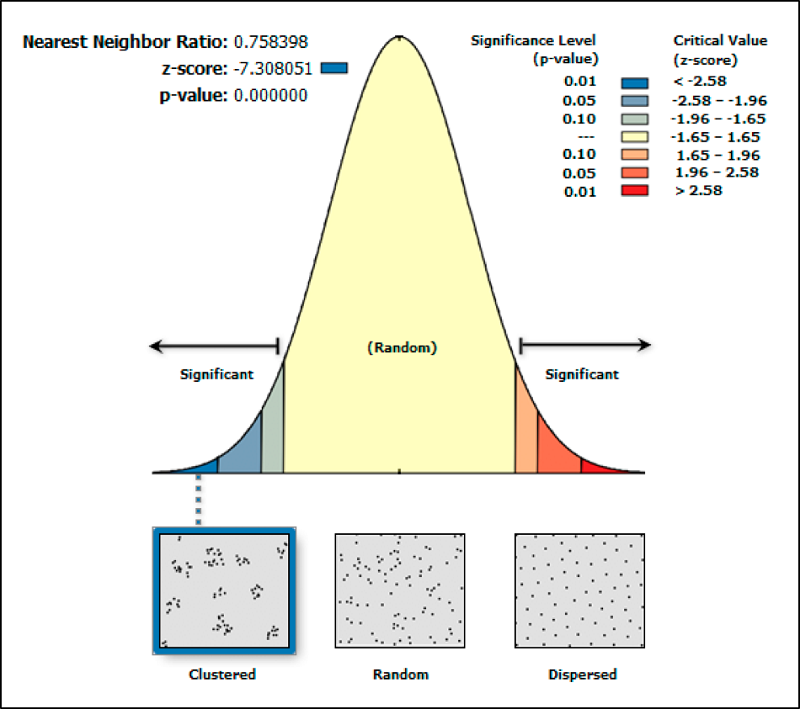

Анализ точечных паттернов и кластеризация
Для практической работы по теме используется геоинформационная система QGIS.
Весь приведенный ниже порядок действий показан для версии QGIS 3.34, поэтому возможны небольшие расхождения в названиях функций/инструментов, если у вас установлена другая версия.
1 Исходные данные
В качестве исходных данных для работы будут использованы сведения о преступлениях в Сан-Франциско.
Все наборы данных доступен по ссылке.
В скачанном архиве вы найдете две папки:
Crime events - векторные слои точечных объектов в формате shapefile для нескольких типов преступлений;
SF PD Plots - агрегированные по округам данные.
Так как темой занятия является анализ точечных паттернов, то вам понадобится один из слоев из папки Crime events:
sf_cartheft.shp - угоны машин;
sf_drugs.shp - случаи торговли наркотиками;
sf_roberry.shp - ограбления;
sf_vandalism.shp - случаи вандализма.
Не забывайте, что shapefile - это коварный формат и вам нужен не только файл с расширением .shp, но и все другие с таким же именем, но другими расширениями.
| Variable | Description | Описание атрибута |
|---|---|---|
| IncidntNum | Unique identifier for each incident report | Идентификатор инцидента |
| X_pr | Projected X-coordinates | Координата Х в прямоугнольной системе координат |
| Y_pr | Projected Y-coordinates | Координата Y в прямоугнольной системе координат |
| Category | Crime classification (robberies, drugs/narcotics possession or sale, vehicle theft, and vandalism) | Тип преступления |
| Descript | Description of the crime | Описание |
| DayOfWeek | Day of the week that crime was reported | День недели, в который было подано заявление |
| Date | Date of the report | Дата заявления |
| Time | Time of report | Время заявления |
| PdDistrict | Police district | Полицейский участок |
| Resolution | Outcome of the report, e.g. None, Arrest, Unfounded, etc | Результат работы по заявлению |
| Location | Street address where the crime occurred | Название улицы, где произошло преступление |
| X | X-Coordinates of crime location | Долгота |
| Y | Y-Coordinates of crime location | Широта |
Открыть данные вы можете, просто перетащив файл с расширением .shp в пустое окно QGIS или через строку меню Слой \(\longrightarrow\) Добавить слой \(\longrightarrow\) Добавить векторный слой.
После добавления векторного слоя и открытия подложки (опционально), вы должны увидеть что-то похожее на картинку ниже.

Локальная оценка плотности по квадрантам рассмотрена по ссылке
2 Ядерная оценка плотности
Визуальную оценка ядерной плотности можно выполнить с помощью стилизации слоя точечных объектов в виде тепловой карты, о чем рассказано по ссылке. Однако в этом случае следует помнить, что полученная карта не является статичной и будет изменяться в зависимости от масштаба на экране, тогда как описанный ниже метод расчета даст статичную карту.
Для построения карты ядерной оценки плотности воспользуемся инструментом Тепловая карта (оценка плотности ядер) из панели инструментов анализа.
Если у вас закрыта Панель инструментов анализа, то вы можете открыть ее заново из строки меню Вид \(\longrightarrow\) Панели \(\longrightarrow\) Инструменты анализа.
В открывшемся окне инструмента следует выбрать параметры расчета1.

Рассмотрим основные параметры подробнее:
точечный слой - это векторный слой точечных объектов, для которого будет выполняться оценка плотности;
радиус - расстояние, в пределах которого будет рассчитываться значение функции плотности;
параметры размера растра - так как полученный результат будет представлен в виде непрерывных значений, он будет сформирован в виде растра, поэтому необходимо задать его основные параметры (чем больше строк и полей или чем меньше размер пикселя вы зададите, тем более подробным и качественным получится ваш результат).
Остальные параметры являются не обязательными для настройки, поэтому мы оставим их без изменений.
По умолчанию ваш результат будет сохранен в виде временного слоя, но вы можете настроить его сохранение в файл перед выполнением алгоритма или сохранить уже полученный временный слой.
Здесь при оценке плотности будут рассчитаны значения функции плотности только в пределах заданного радиуса, поэтому, если вы выберете слишком маленькую его величину, карта может быть не построена.
В результате построения тепловой карты, вы получите следующее изображение (здесь радиус был взят 1000 футов и размер растра примерно 1000 на 1000).


3 Оценка точечного паттерна
Для того, чтобы количественно оценить тип точечного паттерна, можно оценить разницу между ожидаемым средним расстоянием до ближашего соседа и фактическим.

По результатам оценки наиболее важными параметрами являются:
p-value - вероятность того, что процесс является пространственно случайным;
z-score - стандартное отклонение распределения.
Как правило, высокие положительные значения z-score говорят о том, что точечный паттерн является регулярным, а низкие отрицательные значения - о том, что точечный паттерн кластеризован.
В QGIS эта оценка выполняется с помощью инструмента Анализ ближайших соседей из Панели инструментов анализа.
Для расчетов с его использованием достаточно только выбрать векторный точечный слой и вариант сохранения результата.
Обратите внимание, что здесь сохранение результата будет происходить в формате html файла, а не уже привычного нам векторного или растрового слоя, так как здесь просто дается результат расчета численных показателей.
Полученный результат в текстовом виде будет выглядеть вот так:

Рассмотрим полученные результаты:
наблюдаемое среднее расстояние - это среднее расстояние до ближайшего соседа;
ожидаемое среднее расстояние - это среднее расстояние до ближайшего соседа, которое было бы при случайном распределении точек;
индекс ближайшего соседа - отношение наблюдаемого расстояния к ожидаемому;
число точек - количество объектов в точечном слое;
z-счет - стандартное отклонение.
В соответствии с документацией, отрицательные значения говорят о том, что точечный паттерн не является результатом пространственно случайного процесса, тогда как положительные значения могут говорить о том, что процесс скорее регулярен.

Полученный результат только говорит о возможности пространственной неслучайности процесса. Наличие конкретных кластеров или регулярность паттерна требует дальнейшей проверки и интерпретации.
В нашем случае, было получено значение z-score = -90.5, что говорит о том, что точечный паттерн скорее всего является кластеризованным.
4 Кластеризация К-средних
Как было рассмотрено в лекции, кластеризация методом К-средних позволяет получить обособленные друг от друга кластеры, внутри которых будет минимизироваться расстояние от каждого из объектов до центроида кластера (при этом центроид не будет является одним из исходных объектов, а просто будет центром массы всего кластера).
В QGIS этот метод реализован в виде инструмента Кластеризация K-means в Панели инструментов анализа.

Для выполнения алгоритма достаточно просто выбрать векторный слой с точечными данными для кластеризации и необходимое количество кластеров.
Для кластеризации не обязательно использовать только точечные объекты, ее можно выполнить также для линейных и полигональных объектов, но в этих случаях кластеризация будет выполняться не непосредственно для них, а для их центроидов.
В нашем случае количество кластеров выбирается произвольно, однако существуют определенные методы расчета наиболее оптимального числа кластеров. Почитать про эти методы можно почитать, например, здесь.
В качестве дополнительных параметров алгоритма можно задать свои имена для полей с номером кластера и размером кластера.
По результатам кластеризации вы получите точечный слой, главным отличием которого от исходного будут являться два новых поля:
- CLUSTER_ID - порядковый номер кластера (начинаются с 0, так как индексация здесь унаследована от языка программирования);
- CLUSTER-SIZE - размер кластера (количество точек в нем).
Для того, чтобы показать, где расположены точки каждого из кластеров на карте, настроим их символы в окне Свойств слоя. В качестве типа стиля следует выбрать Символизация по уникальным значениям, а в качестве значения - CLUSTER_ID.

После этого каждый кластер получит свой цвет на карте.

Кластеризация методом К-средних позволяет сформировать обособленные и компактные кластеры. Проверим, действительно ли это так. Для проверки впишем каждый кластер в выпуклый многоугольник.
Если кластеры действительно компактны и обособлены друг от друга, то полученные многоугольники не будут соприкасаться или пересекаться.
Для построения выпуклых многоугольников воспользуемся инструментом Минимальная охватывающая геометрия из Панели инструментов анализа. Он позволяет построить нужный тип минимальной охватывающей геометрии.

В качестве параметров здесь следует выбрать
слой, для объектов которого будет строиться минимальная охватывающая геометрия;
поле классификации - то поле/атрибут, на основе которого объекты будут объединяться в группы для построения минимальной охватывающей геометрии;
тип геометрии - так как мы хотим получить выпуклые многоугольники вокруг каждого кластера, то нужный тип геометрии - выпуклая оболочка; другие типы геометрии - охват (прямоугольник по минимальным и максимальным координатам слоя), минимальный ориентированный прямоугольник (прямоугольник, ориентированный с учетом разброса наблюдений), минимальная описывающая окружность.

В результате будет построен новый векторный слой с полигонами - выпуклыми многоугольниками, описывающими каждый кластер.

Факт того, что полученные выпуклые многоугольники не пересекаются между собой, говорит о том, что кластеры обособлены друг от друга.
На этой карте вы можете заметить еще и то, что некоторые обособленные точки (например, на острове в правом верхнем углу или в левой части) перетягивают в свою сторону центроиды кластеров, что может разбить некоторые довольно плотные группы.
5 Кластеризация DBSCAN
Ввиду того, что метод кластеризации К-средних всегда все точки отнесет к тому или иному кластеру, что может привести к некорректной разбивке на группы, он может показывать неудовлетворительные результаты на реальных данных, в которых может присутствовать шум и выбросы.
В этих случаях более оптимальным методом кластеризации будет основанный на плотности DBSCAN (Density-based spatial clustering of applications with noise).
В QGIS этот алгоритм реализован в виде инструмента Кластеризация DBSCAN.

Основными параметрами являются:
- векторный слой с объектами, для которых выполняется кластеризация;
- минимальный размер кластера - минимальное количество соседей в пределах заданного расстояния, при котором точка будет включена в ядро кластера;
- максимальное расстояние между кластеризованными точками - расстояние, в пределах которого будет осуществляться поиск соседей для каждой их точек.
Дополнительными параметрами так же, как и для кластеризации К-средних будут являться CLUSTER_ID и CLUSTER-SIZE, а кроме того - возможность рассматривать граничные точки в качестве шума.
Как и для кластеризации методом К-средних параметры в нашем случае были выбраны произвольно, но в случае реального исследования они должны быть обоснованы, исходя из знания предметной области и природы простраственного процесса.
В результате снова получим векторный слой с точечными объектами и двумя новыми атрибутами CLUSTER_ID и CLUSTER-SIZE. Обратите внимание, что для некоторых из точек будут пропущены значения этих полей, это значит, что точка не попала ни в один из кластеров и является точкой шума.
Аналогично предыдущему разделу покажем кластеры на карте разными цветами.

На карте видно, что в результате нами были получены небольшие кластеры в местах с наибольшей плотностью наблюдений, тогда как значительное число точек было отнесено к точкам шума, то есть не вошло ни в один из кластеров.


Для проверки наличия пересечений между кластерами можно аналогично предыдущему разделу построить минимальные охватывающие геометрии каждого из кластеров.
Также имеющаяся в стандартном наборе Панели инструментов анализа кластеризация ST-DBSCAN является вариацией метода DBSCAN, в котором дополнительно учитывается время события. Такой метод кластеризации полезен, если вы знаете или предполагаете, что точечный процесс происходит с разной интенсивностью в разные временные периоды или происходит преимущественно в определенные периоды времени.
Подробно метод описан в статье
Footnotes
Источник изображения: https://gistbok-topics.ucgis.org/AM-03-007↩︎